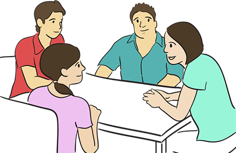

Module: Tips for families and caregivers
Laura Dyas LBSW, LPC, MA
Resources
Caregiver burnout
Signs, symptoms, and prevention of burnout and feelings of being overwhelmed
Printout PDFDo I Have Caregiver Burnout?
As a caregiver, the demands of tending to the needs of your loved one can often lead one to become burned out and overwhelmed. This list shows some signs and symptoms of burnout and feelings of being overwhelmed that you may begin to notice.
What are the signs?
If you are noticing these signs and symptoms, it is advisable that you seek medical and professional treatment.
- Feeling of sadness or being depressed
- Inability to sleep or sleeping too much
- Stomach and GI Issues
- Chronic headaches
- Lack of empathy for loved one, situations, or yourself
- Continued frustration and the inability to manage it
- Unrealistic anger and the inability to properly direct anger
- Trouble with maintaining relationships
- Exhaustion and a lack of energy
- Inability to enjoy social situations
- Desire to stay home and not do anything other than care for your loved one
- Viewing your situation as hopeless, forced, or never changing
How Can I Prevent Caregiver Burnout?
As a caregiver, it is important that you make every attempt to avoid burnout. Here is a list of ways in which you can help to avoid burnout. Remember, the prevention of burnout begins with you! You need to take good care of yourself in order to take great care of your loved one. See the resource on “Caregiver burnout.”

- Be willing to ask for help from family and friends.
- Learn to accept help when it is offered. Do not be afraid to ask someone if they are willing to do something else for you.
- Do not miss any of your own medical appointments or scheduled medical testing appointments. Your health is just as important as that of your loved one.
- Get 6 to 8 hours of sleep daily.
- Take a daily break from caregiving tasks, even if it means you just read ten pages from your favorite book, take a quick hot bath, or walk around the block. Mini breaks can refresh you and keep your mind focused on the positive.
- Maintain contact with friends and continue to go out in social situations. This will help to keep you from feeling isolated.